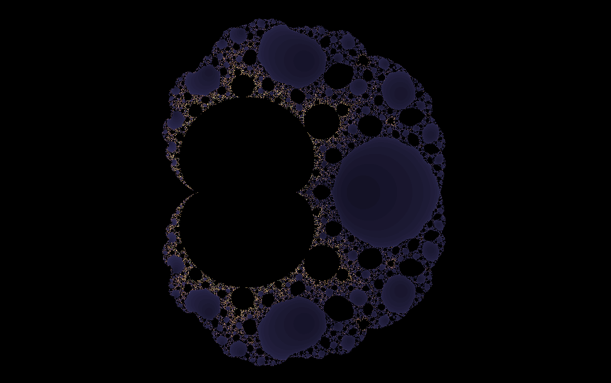
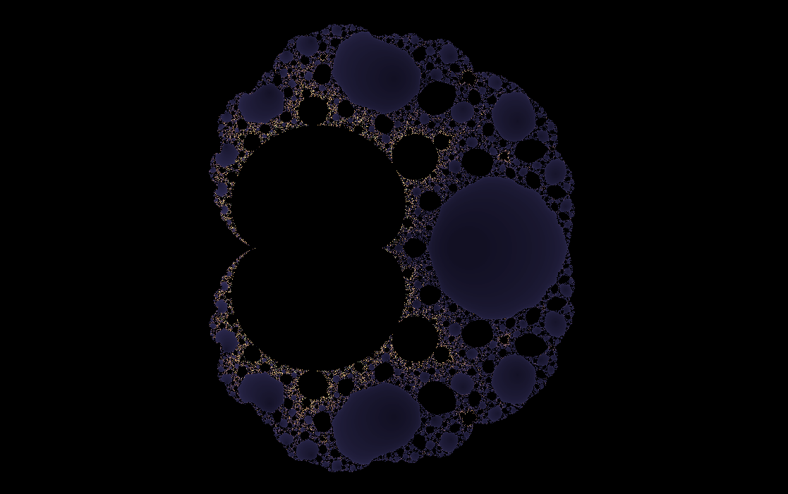
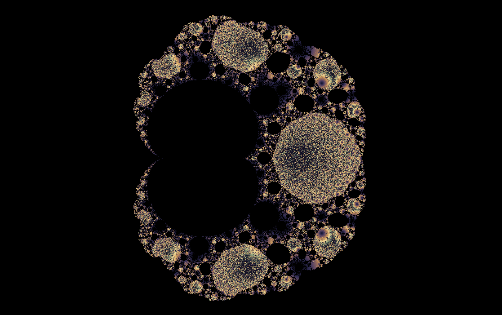
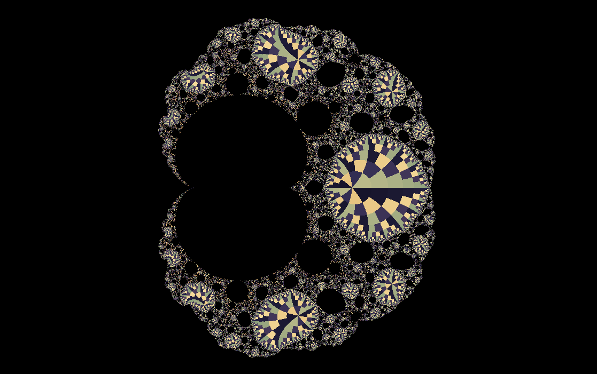
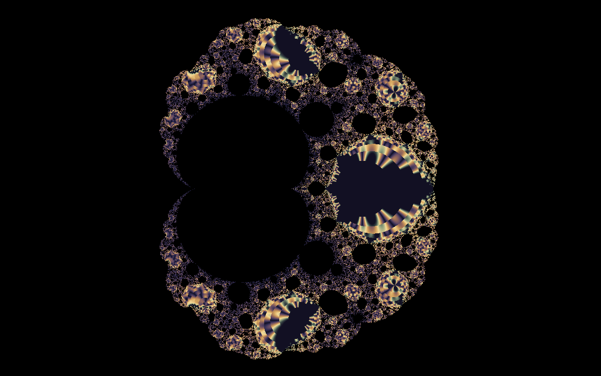
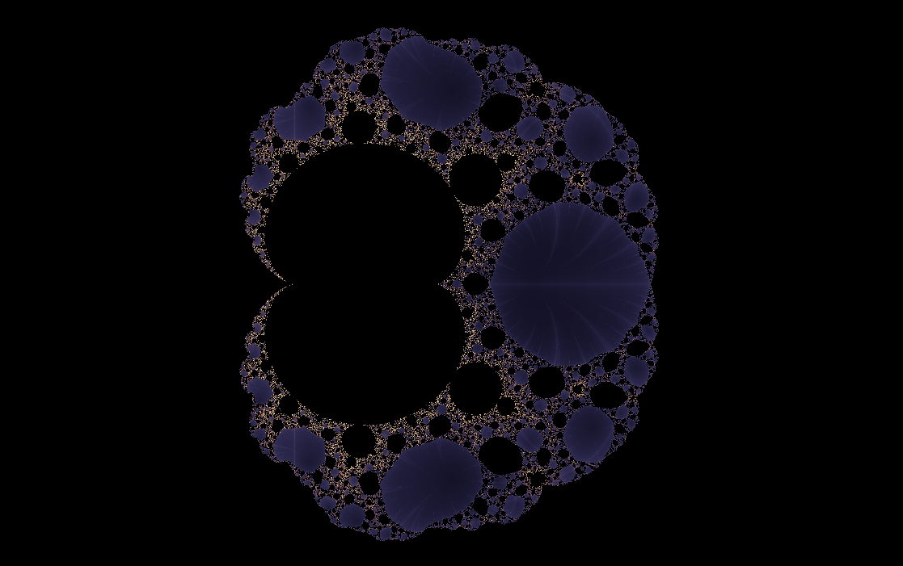

Rational maps
Magnet
A fractal where attraction and escape compete through a fraction.
The Magnet formula does not merely square and add. It divides one polynomial expression by another before squaring the result. That denominator creates singular tension: places where the map can stretch the plane violently.

What to try first
Start with the full view and look for regions that feel pulled into basins rather than simply escaping outward.
Zoom near thin exterior structures. Rational maps often hide dramatic stretching near their denominator's sensitive zones.
Compare escape time and Gaussian integer coloring; the lattice coloring can make the stretched paths easier to see.
Mathematical notes
The wxChaos Magnet formula
wxChaos starts at \(z_0=0\) and iterates \(z_{n+1}=\left(\frac{z_n^2+c-1}{2z_n+c-2}\right)^2\). Because this is a rational function, the denominator can strongly magnify nearby points. That stretching is part of what gives the Magnet set its distinctive geometry.
Coloring lenses
The set stays the same, but each rendering method asks a different question about the orbit.


Gaussian integer
Measures how closely escaping orbits pass near the complex integer lattice.
Apply in wxChaos

Triangle inequality
Turns relationships inside the orbit into layered, topographic texture.
Apply in wxChaos
Orbit traps
Colors points by how closely their orbits pass near a chosen trap shape.
Apply in wxChaos